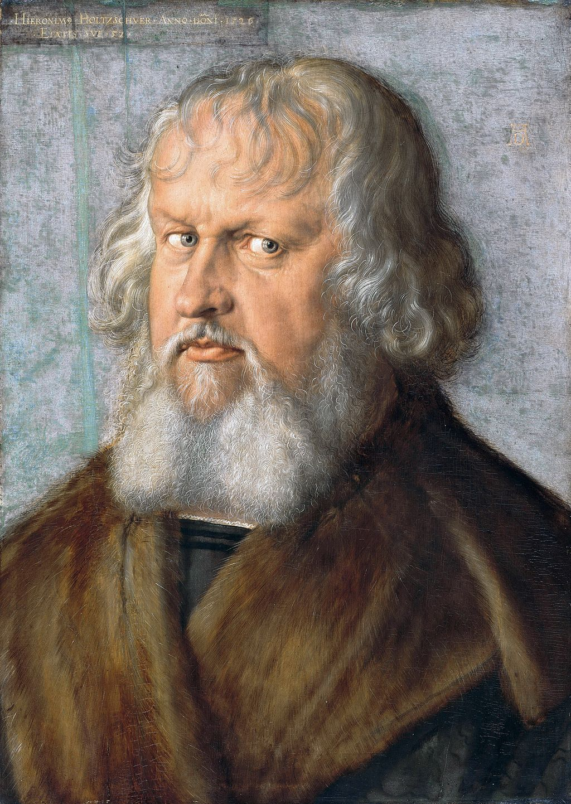

<head>
<meta charset="UTF-8" />
<meta name="keywords" content="drawing, painting" />
<meta name="description" content="drawings by Sunjy" />
<title>Sunjy</title>
<link rel="shortcut icon" type="image/x-icon" href="../../mImages/mCommon/favicon.ico" media="screen" />
<link rel="stylesheet" type="text/css" href="../../mCsses/mCommon/mCssA.css" />
<link rel="stylesheet" type="text/css" href="../../mCsses/mCommon/mCssB.css" />
<link rel="stylesheet" type="text/css" href="../../mCsses/mCommon/mCssC.css" />
<link rel="stylesheet" type="text/css" href="../../mCsses/mCommon/mCssD.css" />
<link rel="stylesheet" type="text/css" href="../../mCsses/mContent/mCssA.css" />
<link rel="stylesheet" type="text/css" href="../../mCsses/mContent/mCssB.css" />
<link rel="stylesheet" type="text/css" href="../../mCsses/mContent/mCssC.css" />
<link rel="stylesheet" type="text/css" href="../../mCsses/mContent/mCssD.css" />
</head>
<script type="text/javascript" src="../../mScripts/mContent/mContentAA.js" /></script>
<script type="text/javascript" src="../../mScripts/mContent/mContentAB.js" /></script>
<script type="text/javascript" src="../../mScripts/mContent/mContentAC.js" /></script>
<script type="text/javascript" src="../../mScripts/mContent/mContentAD.js" /></script>
<script type="text/javascript"></script> 
<script type="text/javascript">
document.write('<div class="mImgAbsolute"></div>');
/*
document.write('<p class="mFontSizeBColor" />From a white paper...</p>');
document.write('<table class="center"><tr><td>');
document.write('');
document.write('</td></tr></table>');
*/
</script>


<script type="text/javascript">
document.write('<p class="mFontSizeBColor" />Portrait of Hieronymus Holzschuher</p>');
document.write('<p class="mFontSizeSColor" />“Portrait of Hieronymus Holzschuher” by Albrecht Dürer depicts a local patrician who was a senator and member of the executive council in the city of Nuremberg.<br><br>It was probably commissioned for an official celebration and exhibited at the city’s town hall. The cultural flowering of Nuremberg, in the 15th and 16th centuries, made it the center of the German Renaissance.<br><br>The German Renaissance developed from the Italian Renaissance and spread Renaissance humanism, which influenced the many advances made in the fields of architecture, the arts, and the sciences.<br><br>Including the developments of printing and the Protestant Reformation that were to dominate the 16th century all over Europe.<br></p>');
document.write('<table class="center" /><tr><td>');
document.write('<br>It was probably commissioned for an official celebration and exhibited at the city’s town hall. The cultural flowering of Nuremberg, in the 15th and 16th centuries, made it the center of the German Renaissance.<br><br>The German Renaissance developed from the Italian Renaissance and spread Renaissance humanism, which influenced the many advances made in the fields of architecture, the arts, and the sciences.<br><br>Including the developments of printing and the Protestant Reformation that were to dominate the 16th century all over Europe.<br>" />');
document.write('</td></tr></table>');
</script>


